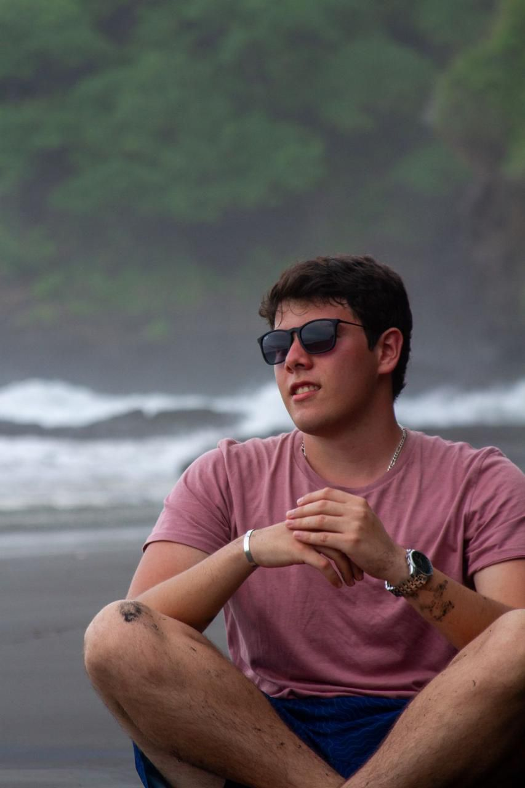
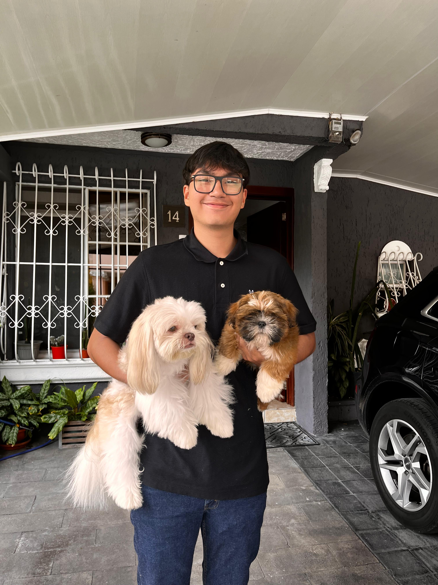
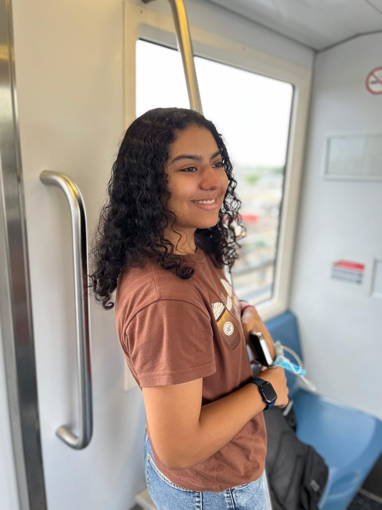
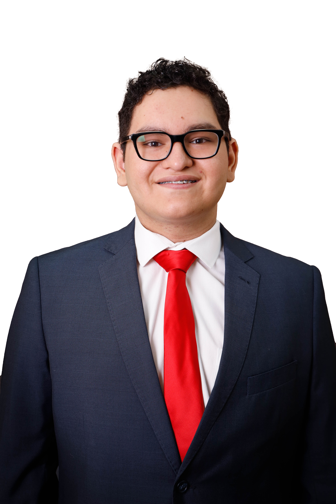

Nuestra misión
Fomentar el turismo en El Salvador mediante la creación de un sitio web que permita a los usuarios explorar las maravillas del Parque Recreativo Los Chorros, facilitando la información necesaria para que planeen su visita.
Nuestro equipo:
Javier Avilés
Ingeniero en software y desarrollador web

Rolando Zelaya
Ingeniero en software y desarrollador web

Juan Juárez
Ingeniero en software y desarrollador web

Andrea Cobos
Ingeniera en software y desarrolladora web

Benjamín Trabanino
Ingeniero en software y desarrollador web